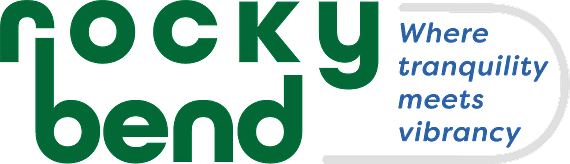
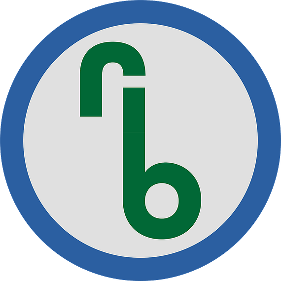
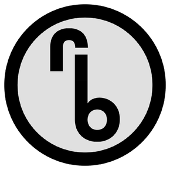
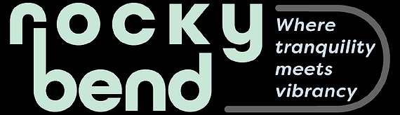
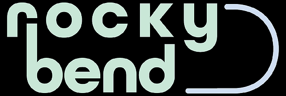
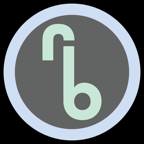
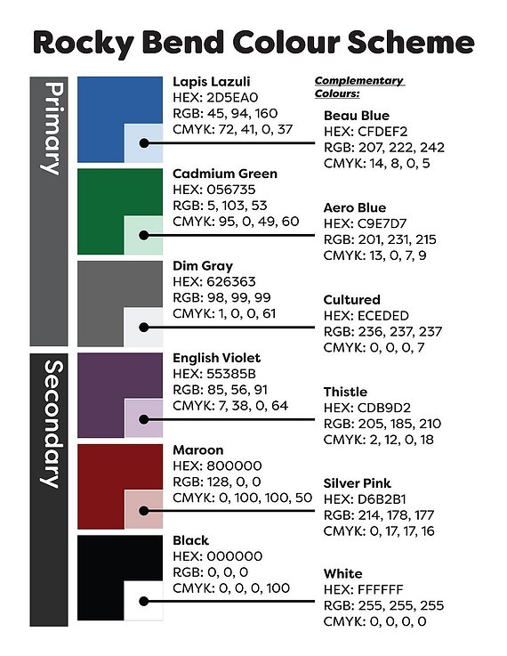
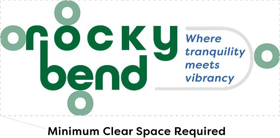
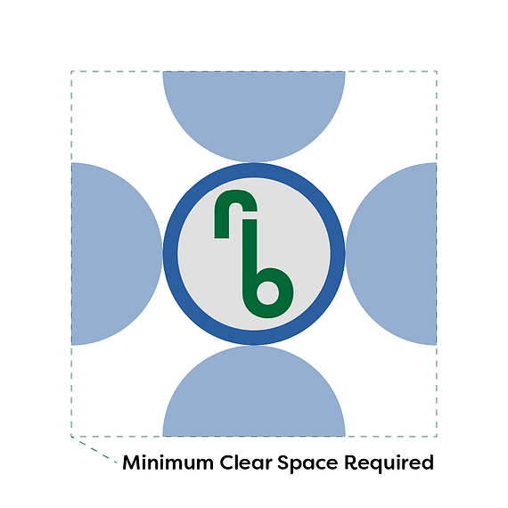
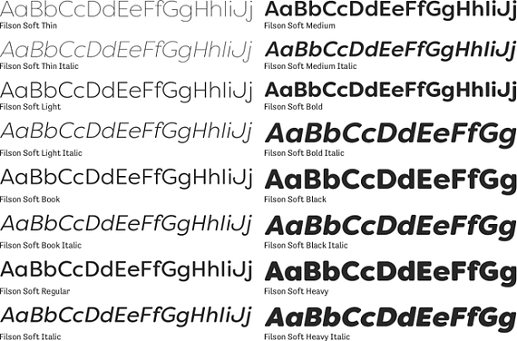

Primary Logo


In collaboration with Kaitlin Laine
This graphic design project was a collaboration between myself and Kaitlin Laine, aimed at developing a cohesive and recognizable brand for a fictional neighbourhood development called Rocky Bend, located in Calgary. The goal was to create a visual identity that would resonate with potential homebuyers and reflect the unique character of the neighbourhood.
To begin the process, we imagined a target audience and a vision for the neighbourhood. Based on this, we developed a logo and colour palette that embodied the area's natural beauty and outdoor recreational opportunities.
We also created a newsletter template, which showcased the brand's message and created a consistent look and feel. The newsletter included information about the neighbourhood's features and amenities, as well as updates on construction and development progress.
The end result was a successful community branding project that demonstrated our ability to create a strong and effective visual identity for a fictional development. Our collaboration allowed us to bring a variety of skills and perspectives to the project, resulting in a cohesive and engaging final product. While Rocky Bend was a fictional neighbourhood, this project serves as an example of how effective branding and design can help create a sense of community and attract potential customers or residents.
Select “See the board” to explore the research map.
Below are all the renditions that we came up with for the logo of our brand. They are all the ideas we thought of while working on this project. Each one of these logos has some sort of fluidity to it to represent the water in the area.
Rocky Bend was inspired by the need for separation from 4th Street in the area. Many people often associate Mission with the vibrancy of 4th Street. As a result, many of the characteristics of the area that so many people are drawn to are lost. Instead, creating a Mission District on 4th allows this association to be stronger, while allowing Rocky Bend to set its own narrative about the look and feel of the neighbourhood.
For many living in Rocky Bend, the central location is a primary factor for choosing to live in the area. However, the deciding factor for these people to choose Rocky Bend over other areas is the proximity to the river and trails throughout the neighbourhood.
Rocky Bend is where the tranquillity from the nature that surrounds the area meets the vibrancy of 4th Street and its proximity to downtown. It is an area where the residents can unwind and get away from the busyness of the city.
The brand system includes a primary logo, an animated logo, a small logo variant, and an icon logo variant, each with monochrome and positive (dark background) variants.
These logos use the colours green, blue and grey from the colour pallets to connect to the design research and branding portion of our project. The logo variations were made so that they can be placed on different things in order to expand our capabilities of placement of the logos.


These logos are to be used only when colour is not available (ex: black & white printing).

Only to be used on a dark/black background.



We chose these colours based on our design research and our own observations of the area and its atmosphere. The blues represent the water in the area, the green represents the nature close to all our doorsteps, the grey represents the river and bike pathways throughout the neighbourhood, and the purples and maroon complement the green and blues and represent the fun and vibrancy in the area.


Minimum clear space equal to the height and width of the “o”.

Minimum clear space equal to the radius of the circle.
The typeface featured on Rocky Bend's logo is All Round Gothic. The primary typeface for print, publications, and online is the Filson Soft family — this contrasts the curve and flow of All Round Gothic while providing structure for larger amounts of text, maintaining the same softness as the logo typeface. Where Filson Soft is not available (email or web), Century Gothic is used in its place.
